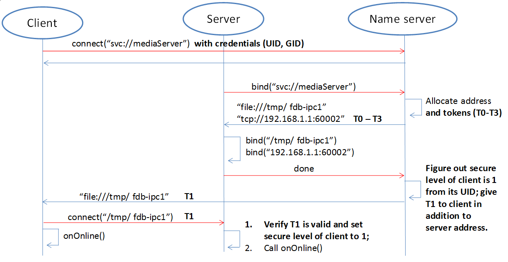
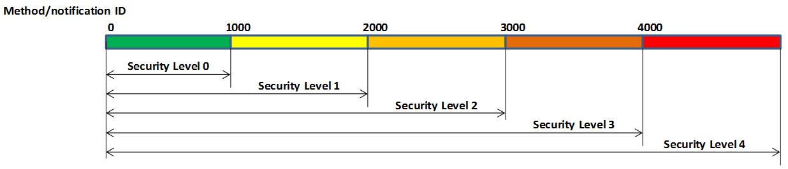

FDBus Manual¶
Abstract¶
This manual describes a new type of IPC mechanism: Fast Distributed Bus (FDBus).
From the perspective of IPC (Inter-Process Communication), FDBus has similarities
with widely used D-Bus (Desktop Bus), but FDBus has its own advantages, more complete
functions, higher performance and convenient use. It can also be networked between multiple hosts
in addition to supporting IPC in the host. And can customize security policies to support
different security levels. FDBus is built on sockets (Unix domain and TCP) and
serialized and deserialized using Google protobuf. FDBus supports the name of a string as
the server address. The name server automatically assigns a Unix domain address and a
TCP port number to the server, so that the addressing between the client and the server
through the service name can be achieved .
FDBus aims to provide a connection-oriented, scalable, secure and reliable IPC mechanism
between client-servers, and then develop into a middleware development framework for cross-platform
(Windows, QNX, Linux), multi-threaded/multi-process middleware layers which working together.
The FDBus development framework is suitable for interactive and complex distributed projects
developed on customization systems, including:
- Linux-based vehicle
ECU, including instrument cluster, entertainment host, TBox, domain controller connected via Ethernet - Communication between multiple Guest OSs on
Hypervisors - Provide cross-host
IPCmechanism for Android system (currently does not supportJava API) - Small communication devices based on
Linux, such as home routers - Other Linux-based industrial equipment, smart equipment
- Automated test equipment based on
Windowsdevelopment
- You may get the open source of
FDBuswith Apache License on Github: - https://github.com/jeremyczhen/fdbus.git
Background¶
Unlike other cores, Linux has not had its own unique and easy-to-use IPC mechanism,
while Windows, Mac OS, and QNX all have such a mechanism. Even Linux-based Android
has developed a binder for IPC. The Linux kernel only provides some of the most basic
components - socket, pipe, message queue, shared memory, and so on. This is also in line with
the Linux philosophy which is that each tool only does one thing and does it well. But the
reality is often very complicated. Just doing one thing is far from solving the problems encountered
in reality, let alone product development and large commercial projects. For example,
subscription-broadcasting is a basic communication requirement, but no basic component can satisfy it.
Actually Linux has a powerful IPC: D-Bus. It has sophisticated method invocation mechanisms
and event broadcast mechanisms. It also includes advanced features such as security policies and
on-demand startup of services. But the biggest controversy about it is the performance: its performance is
very low, due to the daemon relay, a request-reply needs to replicate ten times, four message verification,
and four context switches. Therefore, it can only be used to handle control commands and message delivery
with lower real-time requirements and smaller data volume, otherwise it will have to resort to the basic
IPC framework. For this reason, someone wrote D-Bus into the kernel and generated KDBus.
Although the performance is improved, the disadvantages are obvious. It can only be run on a single machine
and does not support cross-host. In this case, Android’s Binder is also sufficient, and Binder has been
accepted by the kernel. KDBus has not “turned positive” yet. In addition, whether it is DBus or
KDBus, the provision is still the basic API, and there is still a big gap from the “middleware development
framework.” However, there is an increasing demand from various industries, including the automotive industry,
so that various DBus packages are produced: Qt DBus, gDBus, commonAPI, DBus-C++… But these
packages are either subordinate to the big frame or lack of maintenance, in short, it is not friendly to use.
In the automotive field where Linux and Ethernet are used more and more widely, the lack of suitable
IPC has gradually become a prominent problem: the company’s original IPC mechanism is backward due to
backward technology and obvious customization, and it has been unable to meet the requirements of distributed,
high performance and security. However, it is unable to find a suitable IPC mechanism for the new platform,
let alone a middleware development framework derived from the IPC mechanism. The application of Ethernet in
vehicle have spawned SOME/IP (Scalable service-Oriented MiddlewarE over IP). SOME/IP is also a relatively
complete IPC specification, even developed specifically for the automotive industry. But as the name implies, it is
based on the IP layer and does not perform well on a single machine. And the open sources for SOME / IP implementation
are also very few. The GENIVI organization contributed vsomeip, but the activity is very low. GENIVI itself is a
loose organization with more participants but fewer developers. Unlike DBus, SOME/IP is built for vehicle and has
a narrow range of applications. It is impossible to expect an active community to gather a group of professional
programmers to maintain open source (this is probably why GENIVI is unsuccessful). Finally, it is very likely
that you have to pay for closed source software.
FDBus was developed to solve the above problems and has the following characteristics:
- Distributed: Based on
TCPsockets and Unix Domain sockets (UDS), it can be used for both localIPCandIPCbetween network hosts. - Cross-platform: Currently verified on
Windows,LinuxandQNX - High performance: point-to-point direct communication, not forwarded through a central hub or broker
- Security: Ability to configure different levels of access for server method calls and event broadcasts. Only clients with high enough permissions can characterize methods and receive specific events.
- Service name resolution: The server address is identified by name, the service is registered by
the
name server, and the name is resolved, so that the server can be deployed anywhere on the network. - Support cross-platform middleware development framework, including the following components:
- Thread model
- Event Loop
- Inter-thread communication based on Job-Worker
- Timer based on Event Loop
- Watch based on Event Loop
- Mutex
- Semaphore
- Socket
- Notification
IPCadopts Client-Server mode and supports the following communication modes:- Synchronous request - reply with timeout
- Asynchronous request - reply with timeout
- Unanswered command request
- Registration-release mode for multicast
IPCmessage implements serialization and deserialization by Protocol buffer. It supports IDL code generation which is efficient and simple. It also supports raw data format and is convenient for large data transmission- Reliable heartbeat and reconnection mechanisms ensure that all parties remain connected regardless of network conditions, regardless of which service is back online or restarted
- C++ implementation, easy to develop and maintain
Mainstream IPC framework comparison¶
Bottom
layer
|
performance | Sync
request
|
Asynchronous
request
|
Request
timed out
|
Cross-host
|
Message
push
|
Cross-
platform
|
security
strategy
|
|
|---|---|---|---|---|---|---|---|---|---|
| FDBus | Socket | Point-to-point,
high
performance,
second only to
Binder
|
YES | YES | YES | YES
with timeout
and heartbeat
to ensure reliable
connection
|
YES
with
simple
string
matching
|
Window
Linux
QNX
|
YES
Developing
|
| GDBus | Socket | Turned by
daemon,
lower
performance
|
YES | YES | YES | YES
but need
maintaining
reconnection when
network fails
|
YES
with
complex
matching
|
Window
Linux
QNX
|
YES
Developing
|
| Binder | Binder
driver
|
Direct copy,
highest
performance,
|
YES | YES
but need
callback
package
|
YES
but need
to
increase
|
NO | YES
but need
callback
package
|
Only
Linux,
requires
kernel
driver
|
YES |
Middleware model based on FDBus¶
The following figure is an example of a middleware layer based on FDBus development:
{kind=link}
The middleware layer contains multiple processes, whether they are on the same host system or
on different host systems. Each process can run multiple threads. FDBus runs a specific event
loop on a thread basis, enhancing the generic thread to a worker thread capable of executing jobs,
timers, and watches. The two communication parties (client and server) of FDBus are collectively
referred to as endpoint. Endpoints can be deployed on different workers; multiple endpoints can also
share the same worker. “Endpoint deployed on the worker” means that the event processing of the endpoint
is executed on the worker. For example, the server processes the client request on the specified
worker; the client processes the asynchronous reply and the broadcast event of the server on the
specified worker. Middleware developers can use a worker to handle multiple endpoint events
according to the actual situation, avoiding consuming too many threads, and also avoiding the
“concurrency disaster” caused by multithreading. Developers can also use multiple workers to serve
one endpoint. For example, endpoint can create worker threads to complete time-consuming
file downloads, video codecs, peripheral IO operations, etc..
Multi-threaded collaborative work requires that messages and data could be transferred between threads.
For example, the endpoint should be notified for subsequent processing if the file is downloaded successfully.
Because the same address space can be accessed in the process, the best communication carrier is
the object which can either carry the data or specify the way of data processing. Job is the object that
FDBus transfers between threads, FDBus realizes inter-process communication through the transfer
and execution of jobs between threads.
A more important feature of FDBus is interprocess communication (IPC). Objects cannot be
directly passed between processes. Processes can only interact in the form of messages. Further more,
messages need to be serialized during transmission and deserialized after receiving. Each IPC
mechanism, including Binder, SOME/IP, and DBus, has its own serialization method.
The quality of serialization directly affects communication efficiency, load, support for data
structures, and ease of use. FDBus does not have its own serialization method, just uses google
protocol buffer directly which is easy to use, full-featured, and supports idl automatic code generation.
Data is communicated between processes using sockets, including Unix Domain Sockets (UDS) and
TCP sockets. The system will automatically choose which type to be used according to the deployment
of Client and Server: UDS is used if inside the same host, otherwise TCP socket is used.
For Windows, since UDS is not supported, TCP sockets are used for all.
FDBus addressing and networking¶
Server address¶
The server address is the identifier of the server in the network. Through this identifier,
the client can find the specified server and establish communication with it. As mentioned
earlier, FDBus supports UDS and TCP sockets, each with its own naming method and namespace.
For unification, FDBus uses the following rules to define the server address:
UDS: file://socket filenameTCPsocket: tcp://ip address: port number
Different from the socket server in the general sense, the FDBus server can bind multiple addresses
at the same time, and each address can accept the connection of the client. Once connected, each address
provides the same service, so the client can choose any address to establish a connection. The following
figure is a schematic diagram of the FDBus server address binding:
{kind=link}
In the figure above, the server is bound to a UDS address: file:///tmp/fdb-ipc1. The client on the
same host can use this address to initiate a connection. Of course, it can also connect to any other address,
but undoubtedly the most efficient one is UDS. And UDS supports peer credentials, and thus support
security policies. As the host has multiple network ports, the server can also bind one address
(port number) to each network port: tcp://192.168.1.2:60004 and tcp://192.168.0.1:60004. Each address
is used to connect to the client of the corresponding network segment.
Server naming and address assignment¶
It is inconvenient and not intuitive to use the above address to locate the server. The address will
change with the networking mode and cannot be deployed flexibly. For this reason, FDBus has added an
addressing mode: server name addressing. Each server can have its own name. A service called name server,
is run to assign addresses to the server, manage the mapping between server names and addresses, parse
the server name, and issue the server address. The name server is a bit like the DNS on the internet.
To support server name addressing, a format is added to the two URLs as the name address, as follows:
- svc://servername
The name address is a virtual address. No matter where the server is located, as long as its name and address
are unchanged, the client can establish contact with it through this address. If the server calls bind() to bind
the name address (the address starting with svc:// ), the name server will assign the actual address (the address
starting with tcp:// or file:// ) to it and register the name and address to the mapping table. If the client connects
to the name address, the name server will look up the actual address of the server according to the name and
select the most appropriate actual address to publish to the client. The client establishes a point-to-point direct
connection with the server through this address. The following figure shows the process of establishing a connection
between the client and the server using the name address with the help of the name server:
{kind=link}
First, the client calls connect(“svc://medisServer”) to establish a connection with the server named mediaServer.
Since the name address is used, FDBus will ask the name server for the actual address of the mediaServer.
But now mediaServer is not online yet, so the name cannot be resolved, just subscribe to the online
notification of the service. Soon after, the server calls bind(“svc://mediaServer”) to be online.
Since the name address is used, the request will also be sent to the name server. The name server
registers its name, assigns UDS and TCP addresses, and returns them to the server. The server is
bound to each actual address, and the name server is notified after success. The name server
issues the server online message and the server address to the entire system: the UDS address is
broadcast to the local client, and the TCP address is broadcast to the clients on other nodes.
The client establishes a connection with the server using the received address, and both the client and
the server can receive the event notification of onOnline().
The name server uses the following rules to assign a server address:
| Server | TCP Address | UDS Address |
|---|---|---|
| host server | port No. 6100 | /tmp/fdb-ns |
| name server | port No. 6101 | /tmp/fdb-ns |
| user servers | Port 61002 – Port 65535
or
Automatic system allocation
|
/tmp/fdb-ipc0,
/tmp/fdb-ipc1,
…
|
Multi-host networking¶
Since the address of the name server is fixed, the endpoint will automatically connect to the name server
registration (server) or resolution (client) name after the endpoint is started. If there are multiple hosts,
each running their own name server, responsible for their respective name services, then these hosts
become isolated islands and cannot be connected to each other through service names such as svc://server_name.
Of course, the client can bypass the name server and directly connect to the server with the actual
address, but this cannot be flexibly deployed and networked. In order to support name resolution across
networks, a service is required to manage all hosts in the system, and the host information is synchronized
to all name servers. These name servers can establish connections and work together to complete the name
service within the entire network. This service is the host server.
The working principle of the host server is: the entire network runs a host server, which can be located
on any host that everyone can access. All host name servers are connected to the host server, registering
their own host. The host server maintains a list of hosts containing the IP addresses of the hosts and
synchronizes the tables to all name servers on the network. The name server establishes a connection
with the name server on all hosts in the network according to the table.
Once the name servers on all hosts are connected in pairs, the service name resolution and service
online notification can be completed through a set of internal protocols. For example, when a client on
a host requests the local name server to resolve the address corresponding to the service name, the local
name server can broadcast the request to all connected name servers to find services in the entire
network. The following is an example diagram of the entire system networking:
{kind=link}
In the above figure, a star connection is established between the name server and the host server,
and the name server and the name server are connected one by one to form a network.
In this system, the main tasks of the name server and host server are:
Name serverconnects to thehost server, and the host is registered to thehost server.- The
host servercollects all host information to form a host address table. - The
host serverbroadcasts the host address table to all name servers. Name servergets the address of the name servers on the other hosts through the table and establish the connection with it.- All servers are connected to the local
name serverand register the service name with them. The localname serverbroadcasts the newly registered service to the local client and all othername serversin the network. - After the other
name serverreceives the broadcast, it also makes a broadcast locally and notifies all clients. In this way, the service online message is spread to the entire network. - All clients are connected to the local
name serverand apply for service name resolution. The localname serversearches its own server address mapping table and sends the application to all othername servers. - After receiving the application, other
name serverssearch their respective server address mapping tables and return the result to thename serverthat initiated the application. - The
name serverforwards the received return result to the client that initiated the application, and the client establishes a direct connection with the service using the actual address in the result. In this way, you can find all services on all hosts.
As can be seen from the above figure, once the connection is established between the client and the server, all communication is completed through this connection without forwarding through the intermediate link.
Uniqueness of the service name¶
Since each host has its own name server, the service cannot be renamed inside the host, but it can be
renamed on different hosts. In this case, when the client requests name resolution, it may receive feedback
from different hosts. The client can customize the connection policy: always connect to the new server,
only connect to the first server, or only connect to the specified server.
Heartbeat detection, reconnection and online, offline detection¶
In order to make the whole system run reliably and ensure that any service can be gracefully restarted
(the entire system still works normally after restarting), FDBus has perfect heartbeat detection and
online and offline detection mechanisms:
- There is a reconnection mechanism between endpoints and
name serverto ensure that the endpoint can always establish a connection with thename serverafter restarting. - There is heartbeat detection between the
name serverand thehost server. Once the heartbeat disappears, thename serverwill try to reconnect with thehost serverto ensure the reliability of the connection between thename serverand thehost server. - The connection between the
name serverand thename serveris established by thehost server: When thename servergoes online, thehost servernotifies all othername serversto establish a connection with it, and also informs thename serverto establish a connection with all othername servers. - The connection between the client and the server is established by the
name server: When the server goes online, thename servernotifies the client to establish a connection with it.
Security¶
As systems become more complex and open, security has become the focus of system architecture design.
An open system means that there may be intruders, and once an intruder accesses a resource that should
not be accessed, it may cause information leakage or destruction. On the other hand, the security of a
system is based on the chain of trust, and only by satisfying the necessary security foundation can build
its own security capabilities. For FDBus, there are two prerequisites:
FDBus itself: the FDBus library running in the
system, the name server, and the host server are all legal and have not been tampered with or replaced,
otherwise security cannot be guaranteed anyway. This is ensured by the operating system with rights
management, secure boot, DM-verity/FS-verity, security upgrade, SELinux and other mechanisms.FDBus message is delivered in plain text. Once someone illegally
listens to the network message, it may cause information leakage and security loopholes. Therefore,
another premise to discuss the security of FDBus is that the intruder cannot intercept the network
packet and obtain the data transmitted by the FDBus on the link. Key data such as tokens will be
encrypted in the future, but it has not been implemented yet.Based on these assumptions, the attacks faced by FDBus mainly come from three aspects:
FDBus bus and runs an illegal client to access the server on other hosts;FDBus server in the hostBased on the above attacks, FDBus ensures the safe operation of the system from the following aspects:
- Authentication of the host node: All hosts joining the
FDBusare divided into different security levels. - Authentication of service access: All clients are divided into different security levels
- Access restrictions: The server’s method calls and event broadcasts are divided into different security levels, so that the client can call the method that matches the server security level and the event broadcast that matches the registration.
Host node authentication¶
A host must establish a connection with the host server if it wants to join the FDBus. The host server
can authenticate the host by checking the host’s IP address or MAC address, and can also determine the
validity of the host through the public-private key pair. For a legitimate host, the host server will
issue an “ID card” for accessing other hosts. After holding the ID card, the hosts can identify each
other and give each other access rights.
“ID card” is implemented by token. When the name server on the host initiates a connection,
the host server will assign multiple tokens to it, and each token corresponds to a security level. The following
table shows the token assignments for each host in a system:
| Security Level 0 | Security Level 1 | Security Level 2 | Security Level 3 | |
|---|---|---|---|---|
| host 1 | token10 | token11 | token12 | token13 |
| host 2 | token20 | token21 | token22 | token23 |
| host 3 | token30 | token31 | token32 | token33 |
There are four security levels in the table. For host 1, the tokens corresponding to each security level
are token10, token11, token12, and token13. For other hosts, and so on. When the name server of the host 2
is connected to the name server of the host 1, it needs to hold one of the four tokens of the host 1.
For example, host 2 uses token 11 to connect to host 1, then in the eyes of host 1, the security level
of host 2 is 1; if token13 is used, the security level of host 2 is 3, and so on. The number of security
levels can be configured according to the project.
The security level of the host is specified after the host server identifies and authenticates the host.
As mentioned above, the host server can identify the host identity according to the host’s MAC address or
other means, and then use the following configuration table to publish the tokens used by the hosts to
access each other:
| host 1 | host 2 | host 3 | |
| host 1 (MAC address1) | NA | token22 | token31 |
| host 2 (MAC address2) | token13 | NA | token33 |
| host 3 (MAC address3) | token12 | token23 | NA |
For example:
And so on. For hosts that are not in the table, the host server will not reject the connection for the sake of
openness, but will not issue a token for it. For hosts that do not have a token, the security level is considered
to be -1 and there is no level.
Service access authentication¶
Just as the host server is responsible for host authentication, the name server is responsible for the
authentication of the service access, and also uses the certification authentication + token issuing method.
When the server registers the service name with the name server, the name server allocates multiple
tokens at the same time as the address is assigned, and each token corresponds to a security level, as shown
in the following table:
| Security Level 0 | Security Level 1 | Security Level 2 | Security Level 3 | |
| server 1 | token10 | token11 | token12 | token13 |
| server 2 | token20 | token21 | token22 | token23 |
| server 3 | token30 | token31 | token32 | token33 |
There are four security levels in the table. For server1, the tokens corresponding to each security level are token10, token11, token12, and token13. For other servers, and so on. When the client connects to server1, it needs to hold one of the four tokens of server1. For example, if the client uses token11 to connect to server1, then in the eyes of server1, the client’s security level is 1. If token13 is used, then the client’s security level is 3, and so on. The number of security levels can be configured as appropriate.
The security level of the host is specified after the host server identifies and authenticates the host.
When the client connects to the name server through the UDS, the UDS will also send the client’s
credentials to the name server, including the client’s uid and guid. Windows does not support UDS, so
it doesn’t support service access authentication. For QNX, although UDS is supported, service access
authentication is not supported because the SO_PEERCRED option is not supported. So currently only Linux
can support, and the credentials are attached by the operating system which is trustworthy, the client can not
fake an identity. According to uid and guid, the name server can identify the identity of the client, and
publish the token used to access other servers through the following configuration table:
| server1 | server2 | server3 | server4 | |
| client1 (uid1:guid1) | token12 | token22 | token31 | token43 |
| client2 (uid2:guid2) | token13 | token21 | token33 | token43 |
| client3 (uid3:guid3) | token12 | token23 | token33 | token41 |
For example:
And so on. For clients that are not in the table, the name server will not reject the connection for
the sake of openness,but will not issue tokens for it. For clients without a token, the security level is
considered to be -1, the lowest level.
When the security policy is enabled, the process of establishing a connection between the client and the server increases the client authentication and token issuance process, as shown in the following figure:
{kind=link}
Compared with the previous timing, in the above figure, the name server issues tokens to the server
and the client respectively: all the security level tokens T0-T3 are issued to the server; only the token
matching the security level is issued to the client. When the client connects to the server, it will also
send the token to the server. The server finds that the received token is consistent with T1 by comparison,
so that the client’s security level is 1. Suppose a malicious client also connects to the same server:
Since the name server can not recognize its UID, it will not be assigned a token. When the client
trying to connect to the server, the server sets its security level to -1 because the token cannot be given,
that is, no security level, . In this case, by configuring the server, the client can only be allowed to access
to a limited API, so that the access control is realized.
Security level and access rights¶
When determining the security level of the client, the server needs to integrate the security level of the client itself and the security level of the host where the client is located: the highest security level of the client does not exceed the security level of the host where it resides. With a security level, the server can define different levels of access: at which levels, which methods can be called, and which broadcast messages are monitored. The following figure shows the partitioning of a server’s access rights:
{kind=link}
Each server can define access rights corresponding to different security levels through the configuration file. The specific method is to segment the method ID and the notification ID, and the IDs falling in different segments correspond to different security levels. For the method call, if the security level of the client does not reach the required level, the server will refuse to execute; for the message notification, if the client does not have the permission, the message of the high security level cannot be registered, and thus the change notification of the message will not be received.
Security policy configuration file¶
The security policy file is located under /etc/fdbus by default.
Parameter configuration file /etc/fdbus/fdbus.fdb¶
This file configures the overall security parameters, including the following fields:
- number_of_secure_levels: number type, how many security levels are configured
- token_length: number type, configured for the length of the token in bytes.
Host configuration file /etc/fdbus/host.fdb¶
This file configures the security parameters of each host, including the following fields:
- host: object type, the key of each element is the host name (“host_name”), and the value is the array type, which contains the security policy of the corresponding host.
- host.”host_name”[…]: object type, which indicates the configuration of a security level.
- host.”host_name”[…].level: number type, indicating the security level.
- host.”host_name”[…].ip: array type, each element is the host ID represented by the IP address,
meaning: the host with these IP addresses, the security level is
host."host_name"[...].level. If the IP is a “default” string, it means that there is no default security level for the host in the configuration file. - host.”host_name”[…].mac: array type, each element is the host ID represented by the MAC address,
meaning the same as
host."host_name"[...].ip.
Server Configuration file /etc/fdbus/server/server_name.fdb¶
The Server configuration file is located in the /etc/fdbus/server directory. Each server has a
configuration file. The file name specification is: server_name+.fdb suffix, which contains the
following fields:
- method: array type, the security policy that the configuration method calls.
- method[…]: object type, defines the security policy for a collection of methods.
- method[…].level: number type, indicating the security level
- method[…].from: number type, which represents the minimum value of the method set. If it is a “default” string, it means that there is no default security level for the configuring method.
- method[…].to: number type, which represents the maximum value of the method set. The overall meaning is: If a method ID is greater than or equal to method[…].from, less than or equal to method[…].to, its security level is method[…].level. Only clients with a security level greater than or equal to this level can call methods in this range.
- event: array type, similar to the method except that it is configured with a security policy for broadcast monitoring. Only clients that meet the security level have the right to listen to the corresponding event.
- permission: array type, configuring the access permissions of the server.
- permission[…]: object type, which defines the configuration of a security level.
- permission[…].level: number type, indicating the security level.
- permission[…].gid: array type, if the element is string type, it means group name, if it is number type, it means group id. The meaning of the security policy is: If a client is in a certain group specified by the array, its security level is permission[…].level. If the field is a “default” string, it means that the client’s default security level cannot be found for the security policy.
- permission[…].uid: array type, if the element is string type, it means user name, if it is number type, it means user id. The meaning of the security policy is: If the client id of a client is contained in an array, its security level is permission[…].level.
Debugging and logging¶
The DBus monitor from DBus is impressive: it can crawl all the messages on the DBus bus,
and it can also set filters to crawl specific messages. The captured messages are very readable,
and various data structures and field names can be displayed. Similarly, FDBus also provides a
tool for crawling messages - log server, and its function is stronger. In addition to FDBus
messages, it also supports debugging log output, and combines FDBus messages and debug logs to
facilitate timing analysis.
The log server is a normal server that mounted on the FDBus. Each endpoint contains its client,
as shown in the following figure:
{kind=link}
Like the normal server, the log server runs up and registers with the name server, which broadcasts
the LogClient in each endpoint. Later, when the endpoint sends an FDBus message, it will also send
a copy to the log server through LogClient. In addition to the FDBus message content, the sent
data also includes:
- Timestamp
- Transmitter and receiver names
- Message type (request, reply, broadcast, subscription, etc.)
The protocol buffer is transmitted in binary format on the line and cannot be printed directly. For debugging convenience, the protocol buffer can convert the message into a text format that is easy to read, visually display the name and value of each member in the message, and expand the array type (repeated type) and nested type.
For debug log output, FDBus has its own API and supports the following output levels
(In ascending order of priority):
- Debug
- Information
- Warning
- Error
- Fatal
As long as the log server is started, when the endpoint prints the debug log through the API,
these logs are sent to the log server through LogClient. The log server can combine the debug
log and the FDBus message to output, or can choose to output specific content separately.
Regardless of which host the endpoint is deployed on, the log server can collect its FDBus
messages and debug logs. The entire system can only run one log server, which is not convenient
for distributed debugging. To this end, FDBus has another tool - log viewer, multiple log viewers
can be started at the same time, all connected to the log server, get the current log information,
and print on the standard output.
FDBus internal structure¶
The following figure is a block diagram of the internal components of FDBus:
{kind=link}
- Base platform abstraction layer - contains system-independent abstractions for adapting to different operating systems
- Advanced platform abstraction layer - a middleware process model that contains the basic components that make up a process
- IPC layer - interprocess communication model, including the basic components for implementing
IPCcommunication - Server layer - provides service name resolution, networking, logging and debugging services
Conclusion¶
FDBus provides a distributed IPC communication mechanism to support client-server communication
across hosts, using service names instead of physical addresses as addressing modes, ensuring connectivity
dynamics and reliability through various services and heartbeat reconnection mechanisms, thereby ensuring
the nodes inside the system can be dynamically added and deleted, dynamically deployed, and arbitrarily
restarted without managing the startup sequence and dependencies, thereby binding the separate modules
together to form a solid whole. As an important part of IPC, protocol buffer supports a variety of complex
data types, can define interfaces with idl and support automatic code generation, greatly reducing the job of
serialization and deserialization. FDBus supports security policies, differentiates security levels from
access, and ensures the security of the entire system.
FDBus is not only an IPC mechanism, but also a middleware development framework, which contains common
components and basic models that are often used in the development of middleware, providing cross-platform
and powerful support for middleware development.
The source code of FDBus is open now, which expects more developers to use, test and improve, and become one
of the options for many middleware development frameworks.